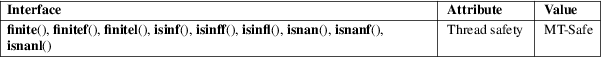

finite, finitef, finitel, isinf, isinff, isinfl, isnan, isnanf, isnanl − BSD floating-point classification functions
Math library (libm, −lm)
#include <math.h>
int
finite(double x);
int finitef(float x);
int finitel(long double x);
int
isinf(double x);
int isinff(float x);
int isinfl(long double x);
int
isnan(double x);
int isnanf(float x);
int isnanl(long double x);
Feature Test Macro Requirements for glibc (see feature_test_macros(7)):
finite(),
finitef(), finitel():
/* glibc >= 2.19: */ _DEFAULT_SOURCE
|| /* glibc <= 2.19: */ _BSD_SOURCE || _SVID_SOURCE
isinf():
_XOPEN_SOURCE >= 600 || _ISOC99_SOURCE
|| /* glibc >= 2.19: */ _DEFAULT_SOURCE
|| /* glibc <= 2.19: */ _BSD_SOURCE || _SVID_SOURCE
isinff(),
isinfl():
/* glibc >= 2.19: */ _DEFAULT_SOURCE
|| /* glibc <= 2.19: */ _BSD_SOURCE || _SVID_SOURCE
isnan():
_XOPEN_SOURCE || _ISOC99_SOURCE
|| /* glibc >= 2.19: */ _DEFAULT_SOURCE
|| /* glibc <= 2.19: */ _BSD_SOURCE || _SVID_SOURCE
isnanf(),
isnanl():
_XOPEN_SOURCE >= 600
|| /* glibc >= 2.19: */ _DEFAULT_SOURCE
|| /* glibc <= 2.19: */ _BSD_SOURCE || _SVID_SOURCE
The finite(), finitef(), and finitel() functions return a nonzero value if x is neither infinite nor a "not-a-number" (NaN) value, and 0 otherwise.
The isnan(), isnanf(), and isnanl() functions return a nonzero value if x is a NaN value, and 0 otherwise.
The isinf(), isinff(), and isinfl() functions return 1 if x is positive infinity, −1 if x is negative infinity, and 0 otherwise.
For an explanation of the terms used in this section, see attributes(7).

Note that these functions are obsolete. C99 defines macros isfinite(), isinf(), and isnan() (for all types) replacing them. Further note that the C99 isinf() has weaker guarantees on the return value. See fpclassify(3).
fpclassify(3)